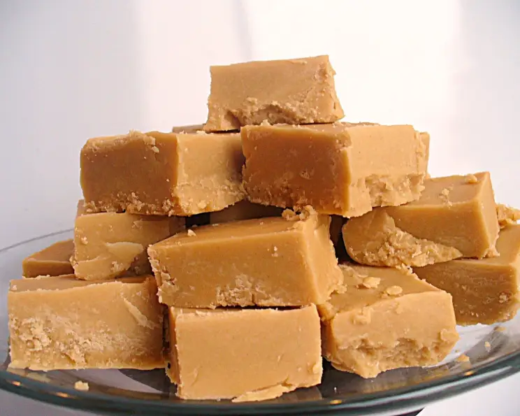

Fudge

Remember the days when you could stop at your local convience store
and buy a single square of the simplest but most delicous fudge?
Those days are far gone, but the fudge is not!
The recipe is quite simple
and the ingredients are easily accessible.
Get ready to relive your childhood!
Ingredients
- 500ml sugar
- 75ml water
- 35ml golden syrup
- 60g butter
- 1 can of condensed milk
- 5ml vanilla essence
Method
- Grease a 20cm x 25cm dish.
- Stir sugar and water over low heat until dissolved.
- Add syrup and butter, keep stirring until butter melts.
- Stir in condensed milk andwait till it boils.
- Boil for 25 minutes, but keep stirring.
It starts as lght beige and will turn golden brown.
- It will get crusty around the edges when its ready.
- Remove from heat and stir in vanilla.
- Pour into the dish to set.
- Cut the fudge into squares just before it turns hard.
Homepage